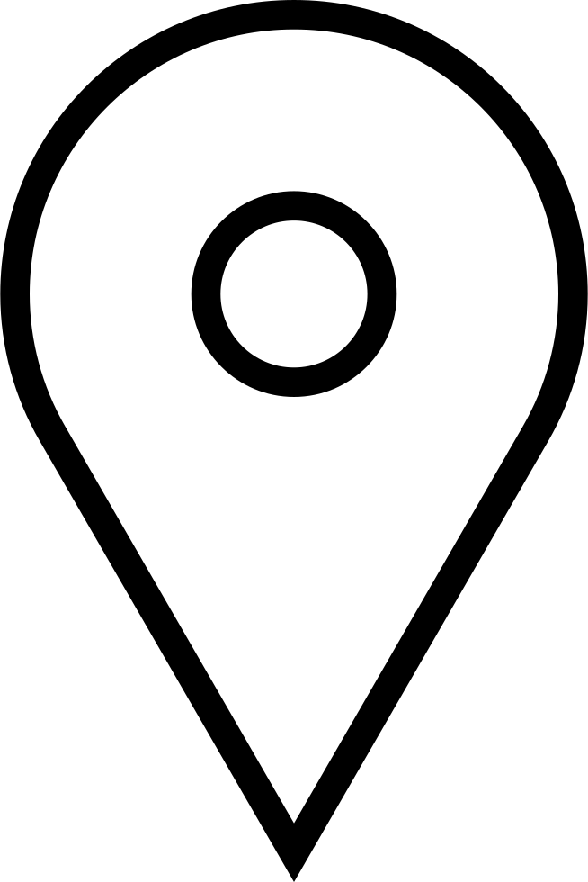

Esta pagina esta dedicada a vos
Por todos los momentos lindos que pasamos, por todas las cosas preciosas que me das cada dia, te amo <3

Puerto Madero, Argentina.
Por todos los momentos lindos que pasamos, por todas las cosas preciosas que me das cada dia, te amo <3
Puerto Madero, Argentina.